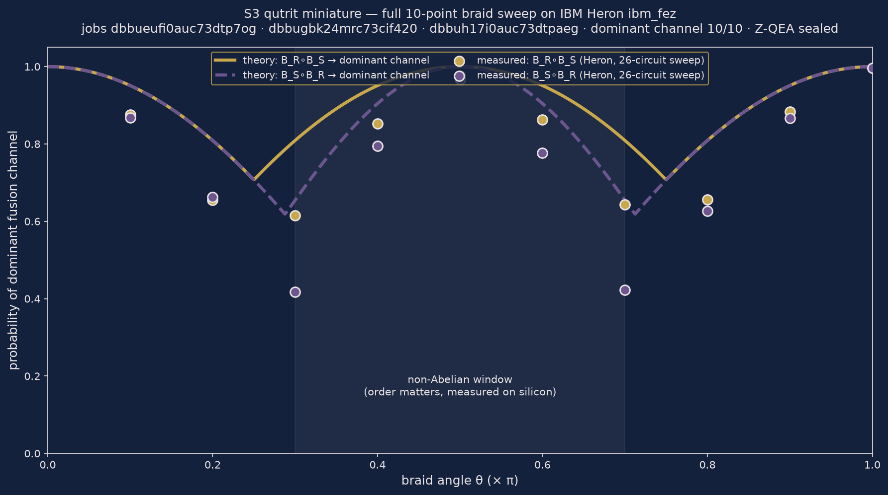

The quantum programming language with receipts.
ZEPHIRUM compiles. ZYQL decides: 1, 0 or REFUSED — every decision produced by Deutsch-Jozsa interference, one oracle call, sealed with two-layer receipts (SHA3-256 + ML-DSA-44/FIPS 204). Nothing executes silently. Simulations are labeled as simulations. Hardware runs cite job IDs.
98.1%braid B_R∘B_S → ch2, IBM Heron ibm_fez (job dbbueufi0auc73dtp7og)
95.8%braid B_S∘B_R → ch1 — order matters, on silicon
3/3trivalent battery on hardware: 1 / 0 / REFUSED (job dbbugbk24mrc73cif420)
0noiseless deviation vs theory, canonical rational arithmetic
Proofs of concept — non-Abelian anyons, verified

The S3 qutrit miniature: fusion space of a non-Abelian anyon pair is 3-dimensional (qutrit-in-qubits), and braiding order is distinguishable on real hardware — 98.1% vs 95.8% on IBM Heron ibm_fez. Full ZYQL trivalent battery on hardware: 3/3 PASS. Noiseless round: exact-zero deviation, canonical rational arithmetic. Every claim carries a Z-QEA receipt with a SHA3-256 seal.
Quickstart
pip install -e . python -c "from zyql_quantum_gate import ZYQLQuantumGate; \ g = ZYQLQuantumGate(3, lambda x: 1); print(g.run_quantum())"